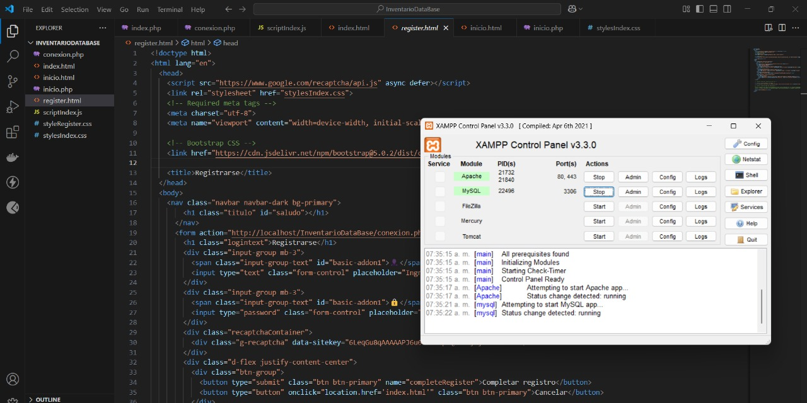
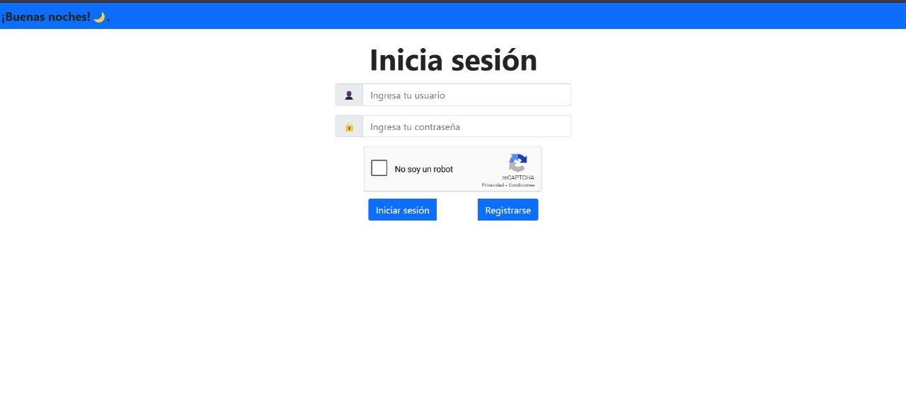
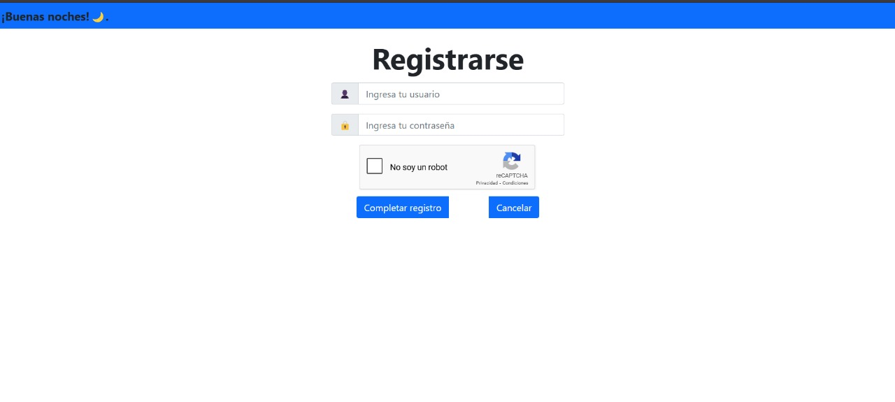

| # | Herramienta y/o lenguaje | ¿Para que se usó? |
|---|---|---|
| 1 | HTML | Para crear el esqueleto de la pagina web |
| 2 | JavaScript | Para la logica de la pagina web |
| 3 | API de recaptcha | Para poder implentar recaptcha v2 como metodo de seguridad para asegurar que no se registre un bot |
| 4 | Bootstrap 5 | Framework usado para el diseño de la pagina |
| 5 | Visual Studio Code | Se usó como IDE |
| 6 | XAMPP | Para el control de usuarios |


